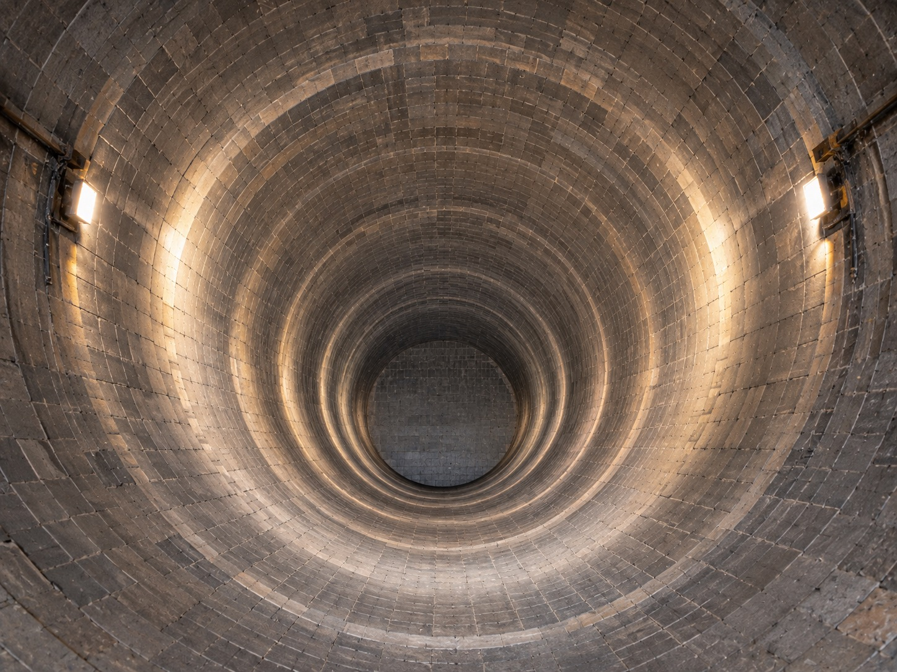

Satu hari keterlambatan shutdown rotary kiln membakar miliaran rupiah. Di dalam shell baja 60 meter tanpa jangkauan 4G, Trunova menjamin setiap bata tahan api, inspeksi foto, dan Kurva-S terverifikasi tanpa risiko rumus tertimpa.
Ketika ratusan teknisi kontraktor memasang batu bata di tengah debu dan gelap, mengandalkan grup WhatsApp dan formula spreadsheet menciptakan kekacauan yang menyamarkan deviasi kritis.
Uji coba interaktif di bawah ini: Simulasikan bagaimana laporan progres pemasangan bata tahan api di smartphone lapangan seketika memperbarui S-Curve dan tabel deviasi di Command Center PC.
Klik setiap pilar di bawah ini untuk melihat laboratorium interaktif bagaimana algoritma pengaman Trunova beroperasi di lapangan.
Dalam pengerjaan refraktori kiln, batu yang sudah dipasang tidak mungkin hilang begitu saja. Geser slider di bawah ke arah kiri (misal ke 50%) untuk memicu deteksi pengaman integritas.
Shell baja rotary kiln bertindak sebagai sangkar Faraday yang memblokir 100% gelombang radio 4G dan Wi-Fi. Trunova memanfaatkan antrean mutasi IndexedDB lokal yang tidak bergantung pada koneksi internet sama sekali.
Bandingkan foto nyata pelaksanaan overhaul kiln Tuban Line 4 dari pembongkaran awal hingga penguncian akhir.

Trunova menghitung deviasi jadwal menggunakan metodologi Earned Value Management (EVM) standar internasional:
Bergabunglah dengan tim overhaul terkemuka yang telah mengeliminasi risiko kesalahan ketik spreadsheet dan memastikan firing tepat waktu.
Pilih tanggal dan isi kontak tim teknis pabrik semen Anda untuk sesi demo interaktif komprehensif.